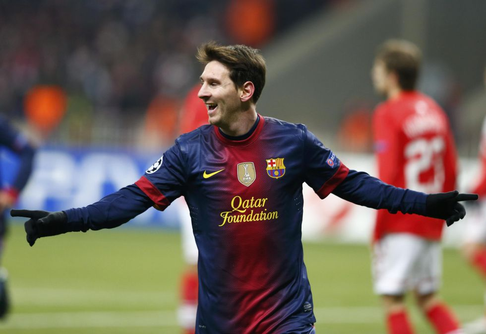
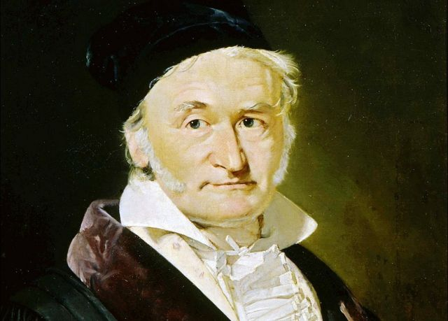
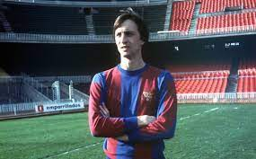

IDOLOS
Hola mi nombre es Cesar Uriel Chavez Patiño actualmente curso el cuarto semestre en el CECyT 9 Juan de Dios Batiz asi
En la carrera de Tecnico en Programacion
SI DESEAS CONOCER MAS ACERCA DE MIS HOBBIES TE INVITO A QUE VAYAS A LOS ENLACES DE LA PARTE SUPERIOR
En esta seccion se mostraran algunos de las personas que me causan admiracion o simplemente personajes de mi infancia
LEONEL MESSI
Leonel Messi nació el 24 de junio de 1987 en Rosario, Argentina.
Ha sido premiado en 6 ocaciones con el "BALON DE ORO", que se le
otroga al mejor futbolista del año, ganando tambien 6 botas de oro
que es el premio que recibe el mejor goleador del año. Messi durante
toda su etapa profesional ha jugado en el FC Barcelona.

GOKU
Goku es un personaje ficticio, protagonista de la serie ""Dragon ball", se estrenó en 1989
con la primer saga "Dragon ball", posteriormente surgieron nuevas sagas, "Dragon Ball Z", "Dragon Ball GT"
y "Dragon Ball Super". Es uno de los animes mas vistos y personalmente, mi favorito, por ello es que GOKU es mi
personaje de anime favorito.
CARL FRIEDRICH GAUSS
Johann Carl Friedrich Gauss fue un matemático, astrónomo, y físico alemán que contribuyó
significativamente en muchos ámbitos, incluida la teoría de números, el análisis matemático, la geometría
diferencial, la estadística, el álgebra, la geodesia, el magnetismo y la óptica.

JOHAN CRUYFF
Jugador y entrenador de fútbol holandés. A los 10 años ingresó en el Ajax de Amsterdam,
club en el cual permanecería hasta 1973 y con el que obtendría 6 títulos de Liga y 3 copas de Europa.
Entre 1973 y 1978 jugó en el FC Barcelona, en el cual consiguió el Campeonato de Liga de 1974.
